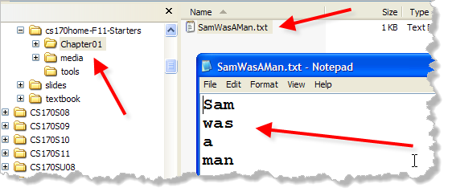
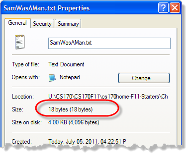
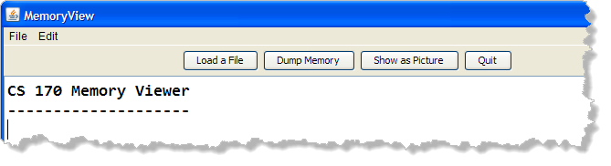
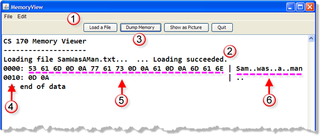
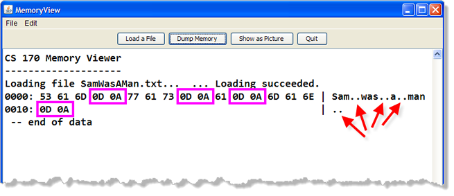

So far, our exploration of memory has been a little theoretical; I'd like to make it a little more concrete by having you look at the actual contents of memory using a simple Java program named MemoryView.
MemoryView is a program that lets you open any kind of file into memory, and then look at how your data is represented once it is stored in memory. We'll use MemoryView to:
- look at the contents of a text file
- look at the contents of an image file
- look at the contents of an executable file
Feel free to look at any other kind of file you have on your computer.
Getting Started
Make sure you've downloaded the "starter" files from
the lecture. In your Chapter01 folder you'll find a plain
text file titled SamWasAMan.txt. Double-click the file and your operating
system will open the default text editor and display the file for
you. (In Windows, that is usually the Notepad program; other
operating systems will have a different text editor installed.)

When Notepad opens, you'll see the phrase "Sam was a man", (without the quotes), as you can see here. (I've made the font a little larger in Notepad, so you can see the characters more easily in the picture.)If you count the characters in the file, you'll see that there are ten letters so you might think that your file should be 10 bytes long, since each character should use up one ASCII byte. Let's see if that's correct.
In Windows Explorer, if you right-click the file and then select
Properties you'll be able to see that actual size of
the file, both in memory and as stored on disk:

As you can see, the size of the file is really 18 bytes, not 10 bytes. Where did the extra 8 bytes come from? Let's use the MemoryView program to find out!Starting MemoryView
Start the MemoryView executable Java program (with the name
MemoryView.jar) by locating and then double-clicking it.
(You should find it in the same folder as SamWasAMan.txt.)
If you have the Java runtime (JRE)
installed correctly on your computer, your operating system will
launch the MemoryView program like this:

The picture here shows the program running in Windows XP; it will look different on Windows 7, the Mac or on Linux. If the program does not start when you double-click it, follow the instructions provided by your instructor for installing a Java runtime (JRE) on your system. To load and examine the bytes from your text file into memory:

- Click the Load a File button and select the file using the standard file chooser dialog that appears.
- If all goes well, you should see a confirmation message once the file has been loaded. If there is an error, a message will be displayed in the same place.
- Since we want to see the "raw" memory after loading the file, you should press the Dump Memory button.
4. Memory Addresses
On the left side of the display are the memory addresses that we discussed earlier. In Java programs (unlike C++ or Assembly language), the operating system keeps track of the actual physical address where the data is loaded. This allows Java programs to rearrange their data elements in memory without disturbing your programs.
Because of that MemoryView starts displaying its data at address 0000. Notice that the first line of memory that is displayed starts at address 0000, the next line starts at address 0010, the third line at address 020, etc. Of course, our file contains only a little data, so only the first two lines display.
5. Raw Byte Data
Each line on the display contains 16 bytes, and each byte is displayed in the hexadecimal number format we discussed earlier. For instance, the first byte is the hexadecimal number 53, which is 5 sixteens + 3 ones, or the decimal number 83.
Since each line displays 16 bytes, you might wonder why the address for each line only increases by ten. That's because all of the numbers used in debug are hexadecimal, not just the binary byte values. Each row increases by 10 hexadecimal, which is 1 sixteen and no ones.
6. ASCII Text Translation
On the right-hand side is the text translation of each line of memory. We loaded SamWasAMan.txt so the ASCII codes from the file were stored in memory starting at address 0000. Note, for instance, that the first byte, which is 53H or 83 decimal, is actually the capital letter "S" in the ASCII chart. On the right-hand side, you can see the ASCII translation of each of the bytes. If there is no ASCII translation, then the program displays a dot instead.
Examining Control Characters
So, where did we pick up the extra 8 bytes? If you look
in the ASCII translation, you'll see two periods after
each word. MemoryView only shows the printable ASCII
characters in its display; all other characters are
replaced with periods.

If you compare the "raw" memory and the ASCII translation, you'll see that the periods correspond to four instances of the sequence OD OA, which are the ASCII values 13 and 10.Those two "invisible" characters were inserted into the text file when I pressed the Enter key after each word in Notepad. If I had typed the text without pressing the Enter key, the file would only contain 10 bytes, as expected.
Since I did press the Enter key after each word though, the file ended up being 18 bytes long. The first byte, the ASCII value 13 is called the Carriage Return, after the typewriter carriage that sends the platen back to the beginning of the line. The second character, ASCII value 10, is called the newline or end of line character, and moves the platen down to the next line.
Unfortunately, not all computer systems
use these same two characters in the same way.
If I had created the text file in Unix, instead of Windows, each
line would end with only a newline character; if I had created the
file on my Mac, each line ends with a single carriage return.
In Windows, of course, we have the best of both worlds.